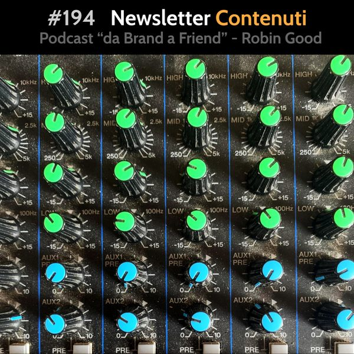

Newsletter: Dove Trovare Contenuti

*Newsletter Contenuti*
Programmi 100% gratuiti per creare newsletter che ti suggerisco di prendere in considerazione:
a) Substack.com
b) Getrevue.com
c) Medium.com
d) Tinyletter.com
Ma dove trovare i contenuti?
Impossibile trovarli nel momento che devi scrivere e pubblicare la tua newsletter.
Per avere contenuti utili per la tua newsletter è indispensabile raccogliere e mettere da parte notizie, risorse, storie interessanti, giorno dopo giorno. Ogni volta che incontri, leggi o ricevi qualcosa di interessante, è necessario metterlo da parte e classificarlo.
Il problema principale però è che la maggior parte delle persone si nutre in generale di notizie e informazioni di poco spessore che incontra in maniera del tutto casuale sfogliando i social media.
Ciò che è necessario è invece l'abilità di individuare nel tempo fonti ufficiali (riviste, giornali di settore, blog) e autori indipendenti che pubblicano periodicamente una loro newsletter e abbonarsi a queste fonti.
Questo deve essere un lavoro svolto con costanza nel tempo, perché per trovare fonti di qualità sarà inevitabile il doversi inizialmente abbonare a molte newsletter di scarso spessore.
Una volta che si comincia ad avere un discreto numero di fonti autorevoli da cui ricevere sistematicamente contenuti e idee interessanti, diventa molto più semplice il compito di assemblare una newsletter ricca di contenuti utili.
Il *workflow* per creare una newsletter editoriale di spessore è più o meno questo:
1) Salva e metti da parte ogni notizia, risorsa o dato interessante che incontri durante il tuo lavoro. Fallo sul momento. Appena lo trovi e ne apprezzi il valore.
2) Per mettere da parte queste "scoperte" puoi usare il tool che preferisci. Da Word a Google Doc, da Notion a Roam Research, oppure usando apps come Google Keep.
3) Quando metti da parte fai in modo di includere uno stralcio del contenuto che è particolarmente rilevante oppure un'immagine che contenga l'essenza del materiale in questione.
4) Classifica la nota che metti da parte, indicando a quale argomento si rifà e ove possibile, annota la specifica rilevanza per il tuo pubblico in una breve frase.
5) Periodicamente attingi a quanto hai messo da parte e trasferisci le scoperte interessanti che hai fatto nella bozza della tua newsletter.
6) Suddividi la newsletter in tante sezioni quanti sono gli argomenti/temi chiave che girano intorno al tuo fuoco principale.
7) Continua ad iscriverti a nuove newsletter, fonti ed autori, man mano che ne scopri di nuovi. Sii altrettanto pro-attivo nel cancellarti da quelle che dopo averne letto 3-4 numeri non dimostrano di essere fonti utili e rilevanti.
8) Dai un cappello ad ogni elemento che inserisci nella bozza della newsletter introducendolo, dando contesto e spiegandone la rilevanza.
9) Ogni volta possibile estrai l’essenza di ciò che le persone troverebbero seguendo i link presenti nella tua newsletter, invece che costringerle a cliccare ogni link per poter comprendere di più.
10) Spiega sempre qual è il valore della risorsa che stai condividendo.
11) Dai sempre credito agli autori e alle fonti, idealmente includendo link diretti ad entrambi.
-------------
Info Utili
• Ottieni feedback, ricevi consigli sul tuo progetto online
Entra nella comunità di imprenditori indipendenti di Robin Good
https://robingood.it
• Musica di questa puntata:
"Ocean" by Joakim Karud - disponibile su Bandcamp:
https://joakimkarud.bandcamp.com/track/ocean
• Dammi feedback:
critiche, commenti, suggerimenti, idee e domande unendoti al gruppo Telegram https://t.me/@RobinGoodPodcastFeedback
• Ascolta e condividi questo podcast:
https://gopod.me/RobinGood
• Nuove newsletter
TRUST-able newsletter ENG
https://robingood.substack.com
TRUST-able newsletter ITA
https://robingoodita.substack.com
Social Media Video
https://robertoferranti.substack.com
Social Media per Artigiani
https://enricabandini.substack.com
• Seguimi su Telegram:
https://t.me/RobinGoodItalia
(tutti i miei contenuti, immagini, audio e video in un solo canale)
oppure
su Facebook:
https://facebook.com/RobinGoodItalia/
su Instagram:
https://instagram.com/RobinGoodItalia
su LinkedIN:
https://linkedin.com/in/RobinGood
• Per info e richieste:
mailto: Ludovica.Scarfiotti@robingood.it